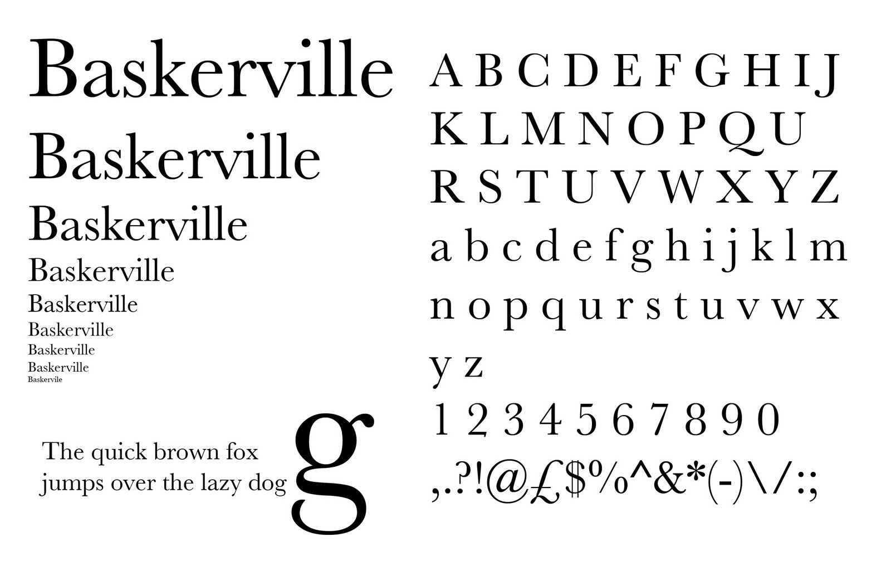
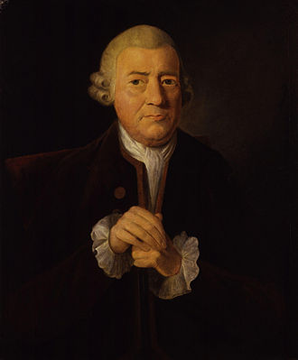

Respuesta Incorrecta
Baskerville es una tipografía con serif
diseñada en 1757 por John Baskerville en Birmingham, Inglaterra
Se ubica en la transición entre las tipografías tradicionales, como Caslon
a los estilos modernos Bodoni y Didot


Es una letra refinada y elegante
La usaría para escribir una carta de amor...
«Hoy se han vuelto pintores, mis ojos, y han trazado
tu belleza en la tabla, de mi albo corazón»
William Shakespeare